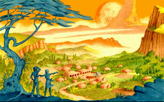
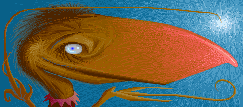

Scoreboard
| Player | Aza | Bar | Blö | DR | Gek | Mot | ole | TDN | Zip | Points |
|---|---|---|---|---|---|---|---|---|---|---|
| Azak | 0 (0) | |||||||||
| Barahir | 0 (0) | |||||||||
| Blörö | 0 (0) | |||||||||
| Dittman Rat | 0 (0) | |||||||||
| Gekko | 0 (0) | |||||||||
| Mothra | 0 (0) | |||||||||
| oleo | 0 (0) | |||||||||
| TDNLT | 0 (0) | |||||||||
| Ziper | 0 (0) |
Info
Welcome to the Ur-Quan Masters Summer 2026 League!
Those who have not received their psychic telecasts yet, Pistol Shrimp Games is developing a new Star Control game: The Children of Infinity! Before this new game releases, it's time to play one more Ur-Quan Masters tournament, just like in the good old days.
This tournament is being played over the New Alliance of Free Stars Discord, and is open to everyone. If the invite link is broken, please contact the organizer, Gekko, at the email jesse.kaukonen@gmail.com
The winner of this tournament will get a small prize!
What you need to participate
- Shiver's Balance Mod
- Optionally, the ability to host games by having port forwarding configured.
- A positive mindset
Schedule
The tournament starts on 28th of June 2026. Sign up before that on the New Alliance of Free Stars Discord!
Format
The tournament is a long-form round robin where everyone plays against everyone else once. Due to time zone differences, the games are played when people are available for them, and the league is expected to last at least a month.
Players self-organize their matches by looking at the scoreboard to see which games they have yet to play and do their best to schedule games with their yet-to-be-faced opponents. Ideally, everyone handles their games as soon as they can.
In case we get an unprecedented amount of players, we'll do a Swiss tournament format instead.
Recordings
If you wish your games to appear on the Youtube playlist, provide recordings of them to the organizer.

Rules
- A maximum of 200 points in a fleet.
- No duplicate ships allowed.
- If there is a stalemate, the faster ship takes the initiative.
- Report the results to the organizer over Discord and remember to include the remaining fleet points, which are used as a tie breaker if two players have the same final score at the end of the league.
- If two players cannot get a game played within a reasonable time, the player who cannot make the time will lose by default.
- If neither party is able to host a game, the game defaults to a draw.
- The organizer has the final word in every dispute.
